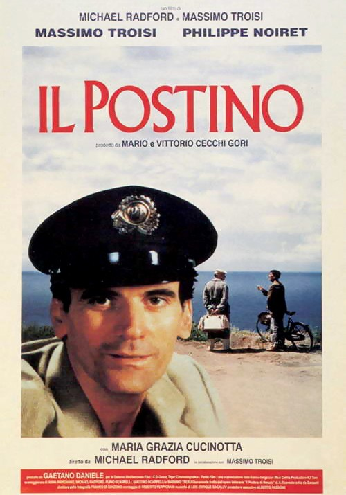

| Watched | ||
|---|---|---|
| Nominations | |||
|---|---|---|---|
| Category | Nominees | Result | Voted |
| Best Picture | Gaetano Daniele, Mario Cecchi Gori, and Vittorio Cecchi Gori | Nominated | |
| Actor in a Leading Role | Massimo Troisi | Nominated | |
| Directing | Michael Radford | Nominated | |
| Writing (Screenplay Based on Material Previously Produced or Published) | Anna Pavignano, Furio Scarpelli, Giacomo Scarpelli, Massimo Troisi, and Michael Radford | Nominated | |
| Music (Original Dramatic Score) | Luis Enrique Bacalov | Won | |